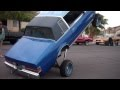

Circa 904.000 risultati (0,29 secondi)
Immagini relative a lowriders
Segnala immagini non appropriate Altre immagini per lowriders-
Lowrider, The Magazine for Lowriders, Low Riders Cars ...
www.lowridermagazine.com
Lowrider Magazine celebrates the culture and low rider lifestyle since 1977. It features from custom lowrider cars, bikes & trucks to street lowrider girls, arts and ...
-
Las Vegas Lowriders - YouTube
www.youtube.com/watch?v=akafnWXI0mo
23 mar 2011 - Caricato da Cali Girl
[27] Lowriders - Summer 2012 + Hipnotized (Viewable on Mobile) - Duration: 19:32. by We Gon Ride T.V. 24 ...
-
Lowrider - Wikipedia
it.wikipedia.org/wiki/Lowrider
Con il termine lowrider negli U.S.A. si intende una vettura le cui sospensioni siano state modificate, spesso sostituite da altre di tipo idraulico, per rendere ...
-
Lowrider - Wikipedia, the free encyclopedia
en.wikipedia.org/wiki/Lowrider
A lowrider (sometimes low rider) is an automobile or other vehicle modified so that its ground clearance is less than its design specification. This can be ...
-
Low Riders Cars For Sale - Cars On line.com
www.cars-on-line.com/lowrider.html
Custom Lowriders for sale. ... Scroll down the menu and click on highlights to view descriptions and pictures of Low Riders for sale. 1948 Cadillac Series 62 ...
-
Low Riders - IMDb
www.imdb.com/title/tt1366338/
Directed by Ricardo de Montreuil. With Nicola Peltz, Theo Rossi, Eva Longoria, Demian Bichir. A look at the lives of enthusiasts of the re-emerging low-riding ...
-
Lowrider Arte Magazine - Lowriders Art, Tatoo, Pictures ...
www.lowriderarte.com/
Lowrider Arte Magazine features lowriders car & truck art, drawings, tatoo, pictures, clothing, videos, musics, models, images, shows & events, paint jobs and ...
-
Lowriders Recordings
www.lowriderscollective.com/
Lowriders Recordings unleash yet another beast of an album with the “Electrophilic EP”, a heavyweight production from the Berlin beat maestro known as Doshy ...
-
Lowriders Unlimited - Canada's Source For Suspension Lift ...
lowriders.ca/
Canada's source for on and off road car and truck parts and accessories including lift kits, leveling kits, and suspension lowering kits, air suspension, ...